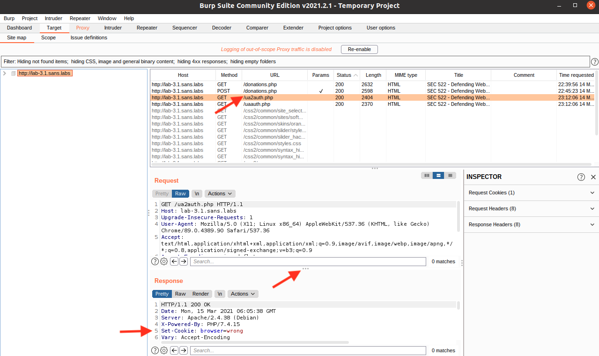
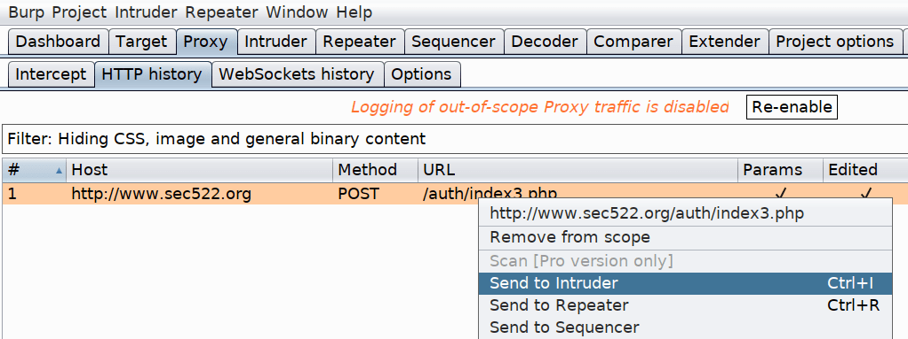
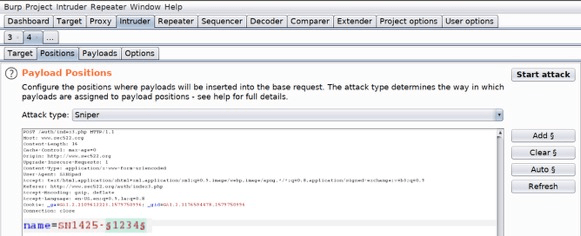
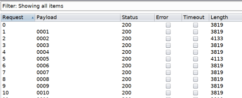
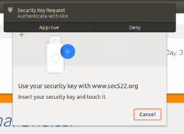

Authentication Exercise
Objectives
Estimated Time: 12 minutes
Part 1:
In this exercise, we will experiment with different examples of weak authentication and demonstrate how to break them.
Part 2:
In this exercise, we will experiment with different examples of weak authentication and demonstrate how to break them.
Part 3:
In this exercise, you will walk through the use of U2F (Universal Two-Factor) tokens for two factor authentication. We use a software simulation of a token (softu2f). After registering and testing the token, we will experiment with a method to bypass the use of the token.
Requirements
- Lab VM
Part 0: (Optional) Simple User-Agent-Based Authentication
No Hints
Step-by-Step Instructions
-
Use Chrome to proceed to http://lab-3.1.sans.labs/uaauth.php. The page will indicate that you are using the wrong browser.
-
Start Burp and configure Chrome to use Burp via the Proxy Switcher plugin.
-
Check to make sure interception is on in Burp ("Proxy" ->"Intercept" -> "Intercept is on").
-
Reload the page in the browser.
-
The request will now be held by Burp. Use Burp to modify the request and change the User-Agent to "CatBrowser".
-
Click "Forward" in Burp. The modified request will now be sent, and Chrome should display the page with a thank you statement for using the SANS browser.
Part 2: More Complex, But Still Weak, Authentication
-
Ensure that the Chrome is set to sending all browser traffic through Burp - the ProxySwitcher in Chome should be "red" in color.
-
Open http://lab-3.1.sans.labs/ua2auth.php in Chrome.
-
Switch over to Burp and allow all traffic to pass without modification. Keep clicking on "Forward" in Burp's Proxy Intercept. This page looks just like the page we examined in the exercise above but there seems to be some subtle difference.
-
To inspect this previous request, in Burp, we change over to the "Target" tab.
-
Look for the most request to "ua2auth.php" and click on it. At the bottom pane of the Burp window is the response details. Due to the window sizing, you might have to adjust the pane to let the response be visible. There is the "three dots symbol" that allow you to adjust the pane sizes. In the response section, you will see the browser cookie being set by the server. We will need to get rid of this cookie in order to get to the website.

-
Switch back to Chrom and reload the page.
-
The request will now be held by Burp. Use Burp to modify the request and change the User-Agent to "DOGBrowser" and also to delete the cookie line. Make sure there are no blank lines in between the HTTP headers.
-
Click "Forward" for all the following requests. You will then see the protected page.
What trick did the developer play to harden the page? Was it sufficient?
The developer coded the authnetication such that when the "wrong" browser connect to the webpage, the application provides a cookie to the browser so that the application can reference the use of "wrong" browser in subsequent requests.
Part 3: Brute Forcing
This is an additional challenge exercise on authentication building on the knowledge you acquired so far. This exercise is to simulate a device registration system where there is personal information being stored.
- Ensure not intercept...
-
Browse to http://www.sec522.org/auth/index3.php
The page describes a registration system where the user has to use a special mobile device with the proper serial number to access or change information. The objective is to acquire as much information from this system as possible.
Use the following hints to help you:
Hint #1
What's the likely user-agent for "SANSpad"? How about the name of the device?
Hint #2
The serial number format is already provided.
Hint #3
Can you brute force the serial number? Scripting may help.
Hint #4
You can use the "Intruder" feature in Burp to assist with brute forcing the solution.
-
Go to http://www.sec522.org/auth/index3.php in Chrome.
-
The page asks for a serial number. Guess one (SN1425-1234) and click "Send".
-
The server responds that we need to use the "SANSpad" browser. Use Burp to change the User-Agent to "SANSpad".
-
You still need to guess a serial number. There are different ways to do this. We will use Burp in this example.
-
Select the Proxy->HTTP history tab in Burp and right-click on the last request for index3.php

-
Send Request to Intruder
-
Select "Send to Intruder".
-
Click on the "Intruder" tab (it should now be highlighted in orange).
-
Select the "Positions" tab.
-
Click the "Clear §" button. This will clear the auto-selected payload positions.
-
Highlight the last four digits of the serial number, and click the "Add §" button. This will mark the last four digits for brute forcing. Also, verify the User-Agent ("SANSpad") and make sure the "Browser=wrong" cookie is removed.

-
Marking Position for Intruder
-
Select the "Payloads" tab.
-
Select "Numbers" from the Payload type dropdown (you may have to scroll down).
-
Select "1" as "From", 100 as "To" , "1" as "Step", "4" as minimum integer digits and 0 as maximum fraction digits (do not select a larger range, as the Burp Community Edition does rate-limit these requests).
-
Click "Start attack" and acknowledge the restrictions of the community edition.
-
You do not have to wait for the attack to finish. Look for requests with unusual values in the "Length" column and click on them. Select the "Response" and "Render" tab at the bottom to review the response. For successful requests, you should see personal information displayed as part of the response. Request 2 and 5 (and others) will show positive results. You may need to scroll up in the result window to see the early responses.

-
Intruder Result
Part 4: U2F And Bypassing 2nd Factor
No Hints
Start at https://lab-3.1.sans.labs/login.php . Click "Reset U2F Data". Next log in and follow the instructions to setup the token. Once you setup and verified that the token is working: Try to reach the "myaccount.php" without using the token (just use the username and password).
Step by Step
-
Open https://lab-3.1.sans.labs/login.php in Google Chrome.
-
Click on "Reset U2F Data" (lower left corner of the page).
-
Login using the username "sec522" and the password "training". You will see a popup at the top of the browser asking you to "Approve" the use of the virtual U2F token.

U2F Dialog
-
Click "approve". You will now be redirected to the "My Account" page at https://lab-3.1.sans.labs/myaccount.php
-
Click on "Log Out". You will be redirected to the login page.
Information
At this point, we have registered a token with the server. There is a key pair generated and the server is storing the key information so that it can be used in the futue to authenticate the user when the user login.
You may have noticed that you have to click on the token approval earlier. This is a design of Fido2 compatible tokens (whether it's the Android OS, iOS, keyfobs) they all require explicit user approval to avoid accidental and unintentional approvals.
-
Login again using username "sec522" and password "training".
-
Again, you will be asked to approve the use of the U2F token
-
You are now reaching the "My Account" page.
So far, you learned how to use a U2F token. For a physical token, you would have to pres a button instead of clicking "Approve". Next, we will learn how to bypass the token request.
-
Click "Log Out" again.
-
Verify that you are actually logged out: Try to open https://lab-3.1.sans.labs/myaccount.php in the browser. You will be redirected to the login page.
-
Login using the username "sec522" and the password "training". You will be prompted for the U2F token again.
-
Decline the U2F token request
-
Open https://lab-3.1.sans.labs/myaccount.php in Chrome. You will be able to access the page. You just accessed the "My Account" page without using the U2F token, bypassing the two-factor authentication requirement.
The application logged you in after you entered the username and password. This often happens if the U2F authentication is added later. A better solution would not associate the users user id with the session until the U2F process is complete, or set a flag with the session that the U2F authentication has not yet completed.